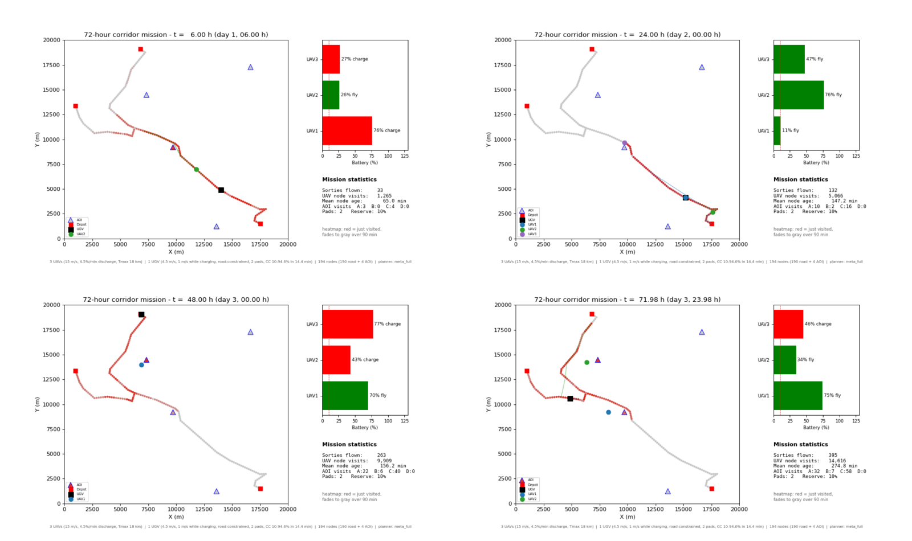

Long missions with small robots are limited less by the robots than by their batteries. My work treats charging as part of the plan: routes, charging slots and rendezvous points are optimized together, then checked in simulation against flight time, turn rate and charging constraints.
In 2026 I re-implemented each project with tests and fixed-seed experiments. The figures and numbers below come from that code.
Three camera UAVs keep the Texas A&M campus under surveillance for a 102-minute mission. One UGV drives a fixed route taken from GeoJSON road data and carries two wireless charging pads. Instead of visiting points, the UAVs are rewarded for the ground area their camera footprint actually observes.
Approach
The surveillance area is split into cells sized by the UAV camera footprint.
Heading-aware path construction: each next pose lies inside a turn-limited cone, so every plan is flyable.
Reward re-initialization lets the team orienteering search escape local stagnation.
An ILP fixes the charging slots on the two pads and keeps them synchronized with the UGV position.
Same camera and charging schedule, three planners (naive area, feasible greedy, FOV + reinitialization). 102 simulated minutes in 60 seconds; blue shading is observed area.
Measured results
101 fixed-protocol runs: 10 paired seeds for each of 8 methods, plus turn-rate and planning-grid sensitivity. Every method flies under the same turn limit and charging schedule. An independent checker re-verifies trajectories, energy and coverage for every run.
99.6%
mean area coverage, full method
+11.4 pp
coverage over a point-based planner
+23.2 pp
coverage over a parallel-strip survey
22.7 min
mean observation age (naive area: 24.8 min)
Method (10 seeds)
Coverage %
Mean age, min
Planning, s
Parallel-strip survey
76.42
30.01
0.65
Point planner
88.21
32.95
0.66
Naive area
99.33 ± 0.40
24.75 ± 1.75
5.29
Feasible area greedy
99.55 ± 0.07
22.70 ± 0.63
1.93
FOV + reinitialization (full)
99.63 ± 0.12
22.72 ± 0.67
4.55
Reading these numbers. Five of the eight methods land between 99.3% and 99.6%, so this scenario is close to saturated. Against feasible greedy, the full method's gain is small (+0.08 pp, 95% CI [0.03, 0.13]) and observation age does not improve. The clear gains are over point-based and strip-survey planning. The naive planner is fragile to the planning grid (99.5% → 73.0% at 1 m on seed 0), while the full method stays at 99.6–99.7%. These are simulation results on one map, not flight tests. The numbers in the 2025 paper came from an earlier implementation, and this table replaces them.
IEEE RA-L 2025
The persistent robot charging problem
N. Kumar, J. J. Lee, S. Rathinam, S. Darbha, P. B. Sujit, R. Raman. IEEE Robotics and Automation Letters, 10(3):2191–2198, 2025.
A fleet of heterogeneous robots must recharge periodically, each with its own charging and working time. How few charging stations can keep every robot running indefinitely? And if stations are limited, which robots should work, and when?
Approach
Times are normalized by their GCD; the schedule repeats over the LCM of the cycle times.
An ILP picks each robot's initial partial charge to minimize stations, or to maximize working time on a fixed number of stations.
Small safety margins shrink the LCM horizon; a Dijkstra search over candidate cycle times finds them.
A late robot is re-scheduled locally while the others keep their plans.
My part: the ILP scheduling models, waiting-time comparison studies, UAV simulations and the open-source pcsim package.
Schedule computed by pcsim for three UAVs on two pads. (a) Optimal schedule. (b) UAV2 is delayed 2 minutes and re-scheduled without changing UAV1 or UAV7.
Reproduction
The Sec. VI case study is regenerated from robot parameters alone, with no hand-coded schedule, and matches every published value. The Python Dijkstra-LCM search reproduces rows 1–7, 9 and 10 of Table I. 23 regression tests pin these results.
29,260 → 36
schedule horizon (min) after 20% safety margins
58 min
flight per 36-min cycle, 3 of 7 UAVs on 2 stations
min 10 → 3
re-scheduled charging slot for a UAV delayed 2 min
Original and delayed schedules side by side over one 36-minute horizon: pad occupancy, battery and routes.
AIAA SciTech 2024 · DEVCOM Army Research Laboratory
Meta-heuristic path planning for aerial–ground teams
J. J. Lee, S. Rathinam. “A Meta-Heuristic Approach for an Aerial-Ground Vehicle Path Planning Problem,” AIAA SciTech Forum, 2024. In collaboration with J. Humann and J. Dotterweich (DEVCOM ARL).
Three battery-limited UAVs and one road-bound UGV that recharges them must keep revisiting 194 nodes (190 road points and 4 areas of interest) in a 20 km × 20 km area for 72 hours. A node's reward grows with the time since its last visit. This is a variant of the NP-hard team orienteering problem (TOP).
Approach
Greedy insertion builds the initial routes.
Improvement loop: 2-point exchange, one-point movement, 2-opt and rearrangement along the road order.
Tabu-search re-initialization leaves local optima.
Reattachment revisits nodes that a later leg passes close to.
A UAV–UGV scheduling rule then chains sorties and charging over the 72-hour mission.
72-hour corridor mission with the full meta-heuristic: UAV routes, UGV position, node-freshness heat map and battery states.
Measured results (2026 re-implementation)
≤ 4.8%
mean optimality gap vs. CP-SAT proven optima (single sortie, 9 configurations)
+48%
node visits over greedy in the 72-h mission (16,539 vs 11,183)
+11–12%
visits over greedy in a 104-min window (20- and 30-target sets)
104-min window, 3 UAVs (visits, mean of 10 seeds)
20 targets
30 targets
Greedy (Dijkstra-style)
58.0
69.0
Meta-heuristic without rearrangement/reattachment
58.3
66.4
+ Rearrangement
61.7
69.3
+ Reattachment (full method)
64.7
77.3
Greedy + reattachment (control)
72.0
81.0
Same sortie without and with rearrangement (67 vs 76 targets).

Mission snapshots at 6, 24, 48 and 72 hours.
Limitations. In the short 104-minute window, greedy routes with reattachment added score higher than the full method (72 vs 64.7 and 81 vs 77.3). Each sortie saturates at 4–5 distinct targets, so these instances are too small for tabu search to matter and the differences come from revisits. Over the full 72-hour mission the meta-heuristic is best on every metric: the most visits, the lowest staleness score (−2.0% vs greedy) and 77.7 min mean time between visits. One area of interest cannot be reached under the road-rendezvous rule. These re-run numbers differ from those in the 2024 paper.
Dissertation · in progress
Ongoing work
My dissertation brings these pieces into one framework for long-duration multi-robot missions: charging schedules as the energy backbone (RA-L), routing with mobile recharging (AIAA) and camera-aware coverage (ICUAS). Current work models the camera itself, including ground sampling distance, gimbal tilt and altitude, so that coverage paths cut overlapping footage and wasted flight time. I also work on task allocation for a Clearpath UGV with a UR5 manipulator.